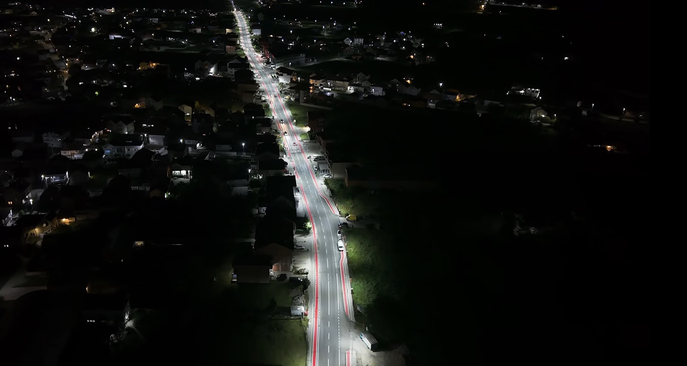
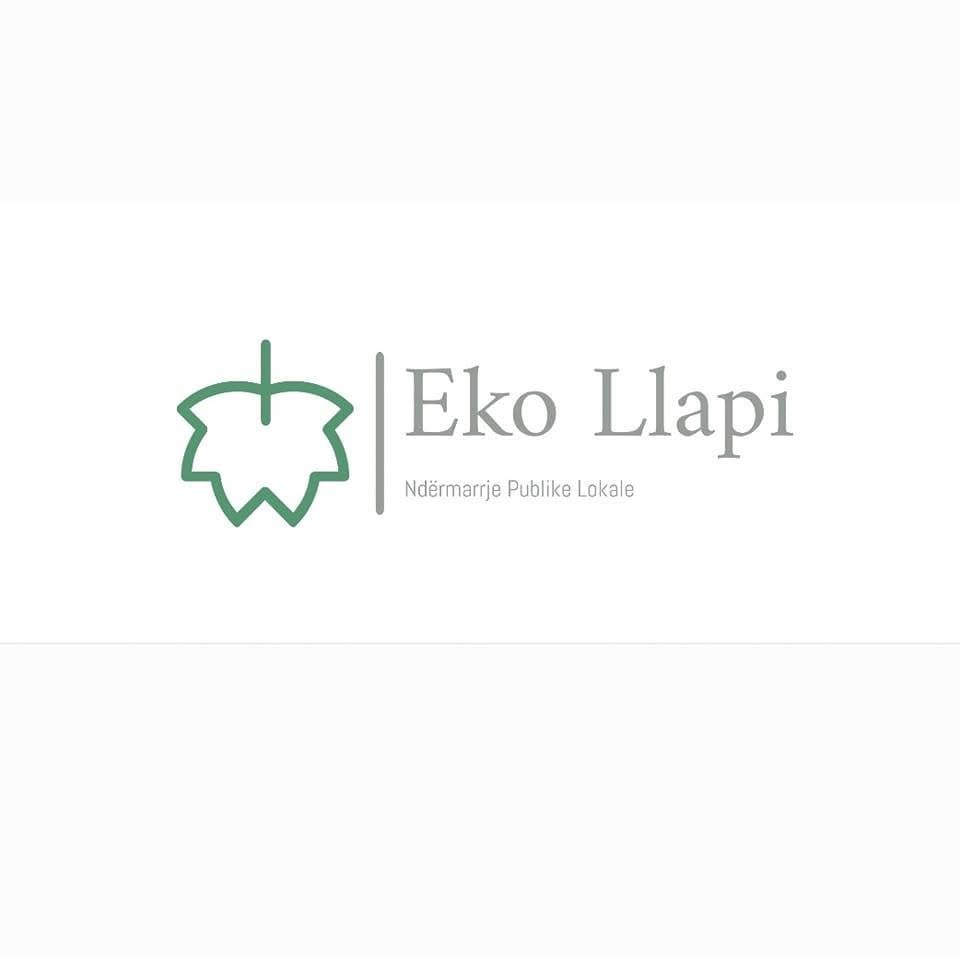

Detajet e Mbështetjes për Infrastrukturën
Këtu mund të shihni detajet e plota të investimeve dhe mbështetjes që kemi dhënë për infrastrukturën në Podujevë.
Statistikat Kryesore
- 1Rrugët janë asfaltuar mbi 150 km rrugë në qytet dhe fshatra; janë rikonstruktuar rrugët kryesore si “Skënderbeu”, “Xhemajl Mustafa” dhe “Hakif Zejnullahu” me investim rreth 4 milion €, duke përfshirë shtegun për biçikleta dhe shtegun për persona të verbër.
- 2Arteria e re është në fazën finale një rrugë e re hyrëse–dalëse për qytetin, që lehtëson komunikacionin nga rruga “Vëllezërit Frashëri” te magjistralja Podujevë–Prishtinë.
- 3Stacioni i Autobusëve është ndërtuar dhe funksionalizuar me vlerë 1.4 milion €.
- 4Ndriçimi publik është shtrirë për 250 km në qytet dhe fshatra.
- 55. Shërbimet publike – është themeluar ndërmarrja Eko Llapi, që mirëmban rrugët, parqet, lumenjtë dhe hapësirat publike.
Galeria e Fotove

